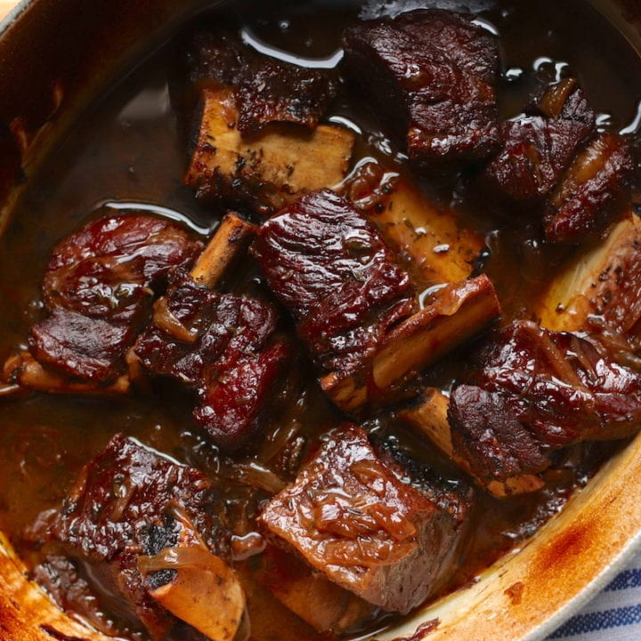

Description
The following meal is for those look for a rich,
meaty meal that's so tender the meat falls off the bone.
Additionaly, the broth from the braise makes
for an excellent soup, perfect for those cold winter months.
Ingredients
- Prime Short Ribs
- Sweet potatoes
- Choice of leafy greens
- Carrots
- Red Wine of choice
- Cocoa Powder
Steps
- In Dutch oven, add 8 cups water, a half bottle of
red wine and bring to boil over medium heat
- Next, add 2lbs of short ribs, chopped sweet potatoes,
leafy greens of choice, chopped carrots, and 3/4 cup of Cocoa Powder
- Place lid on dutch oven and boil for 3hrs
- Remove short ribs from dutch oven using tongs.
With a large cooking spoon, gently pour
liquid from dutch oven over ribs.
- Place remaining liquid from the braise
in a bowl to serve as a soup. Remaining broth can be
stored in fridge for future use!